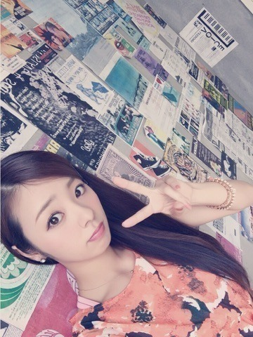
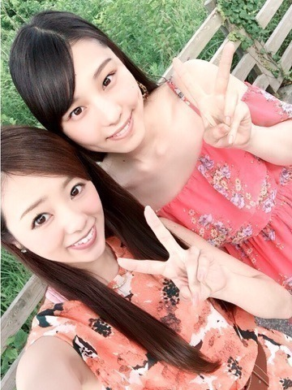
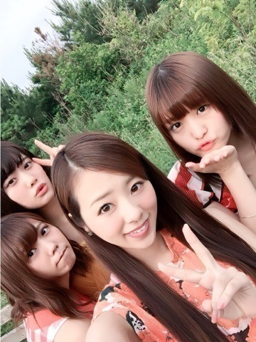
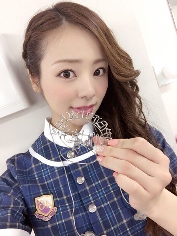

こんにちわ♫
CDのジャケ写衣装ー。
背景レトロ可愛い。

夏だね夏だね。
歩いて歩いて，止まった時、
めちゃめちゃ汗でる♡。
今日の朝方４時，夜中ってゆうのかな？
オールナイトニッポン中のまいちゅんから電話が鳴ったよ。。
「電話になるともっと声高くなるんだね」って言われたな～... あの時間帯になると声出さないから出せる声の音域が狭くなるよ。笑
そして完全にオフモードだったね(^ ^)
まいちゅん埼玉で自転車乗ったら，必ず虫に当たるんだってー♫ この話が1番好きだった。笑 虫に突撃されてるまいちゅん見てみたい。 にやり。´∀｀; )
まいちゅんと近々写真とろおっと。
いおりとの写真あるぅ。

最近いおりに「可愛い」って言いすぎてるから，1ヶ月おこうっと。♡笑
いおり可愛い。
川後，じゅん，かりん。

オレンジのワンピースだねぇ♡
そーいやこないだはメンバーとファンの皆さんとでボーリング大会があったよ。
ボーリングとか仕事でしか まともにやったことないから，下手っぴ下手っぴよ♡
でも２回目の大会は3位になったよ。やったね。 ファンの方の力だね♫ まひろは応援一生懸命やったもん。♪（ｖ＾＿＾）ｖ
とゆうかね，これ，見て♡

23日ライブ前の楽屋で，
私が席を立ち帰ってくると机にこんなものが...
どなたか裏方の技術さんが作ってくれたみたいで... 何も言わずにどこかへ行ってしまったから直接お礼も言えず。。
ありがとうございます(*^^*)
びっくりしました！
お家まで持って帰り台所にかざってます！
とゆうことで今日も1日お疲れ様でしたぁ。